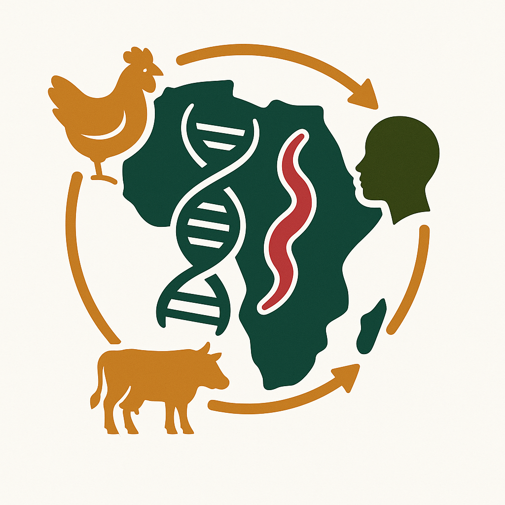

Transmission
Human, animal and environmental sampling to identify key routes of exposure.

Campylobacter Control CampaignOne Health · Genomics · Intervention design
CCC is a One Health network using pathogen genomics to understand and reduce Campylobacter transmission in high-burden settings.
About
CCC builds on GETCampy and related work across Africa and other partner sites.
It connects surveillance, genomics, source attribution, modelling and vaccine-informed prevention.
Current work
Human, animal and environmental sampling to identify key routes of exposure.
Whole-genome and metagenomic analysis to link reservoirs, lineages and disease.
Decision-support modelling and upstream prevention strategies, including animal vaccination where appropriate.
Resources
Outputs
Status: TBC.
Funding
CCC is supported by Wellcome Trust grant 088786/C/09/Z and follows on from GETCampy, MRC MR/V001213/2.
View GETCampy award record